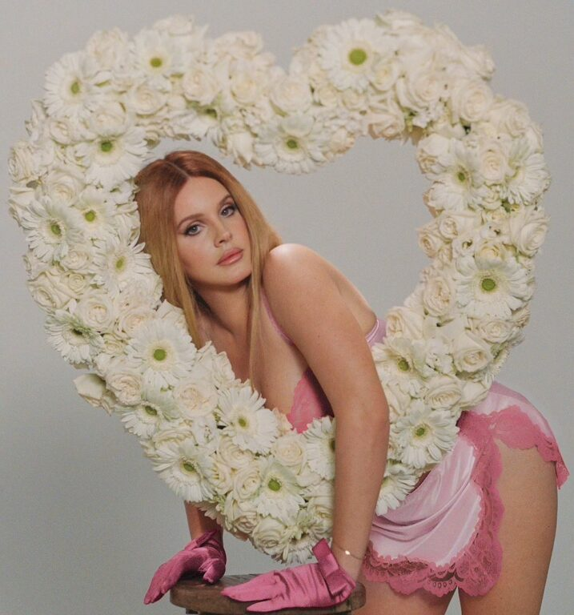

Lana Del Rey
Lana del Rey. Se hizo mundialmente famosa en 2011 con el éxito viral de su sencillo «Video Games» y su álbum debut [Born to Die] (2012).La evolución de Lana Del Rey comenzó con sus primeros proyectos bajo nombres como May Jailer y Lizzy Grant. Con el tiempo creó la identidad de Lana Del Rey y alcanzó la fama con “Video Games” y el álbum Born to Die (2012), caracterizados por un estilo cinematográfico, romántico y nostálgico. En Ultraviolence (2014) adoptó un sonido más oscuro y rockero. Posteriormente, con álbumes como Lust for Life, Norman Fucking Rockwell!, Chemtrails Over the Country Club y Did You Know That There’s a Tunnel Under Ocean Blvd, evolucionó hacia un estilo más íntimo, folk y personal, destacándose cada vez más como compositora.